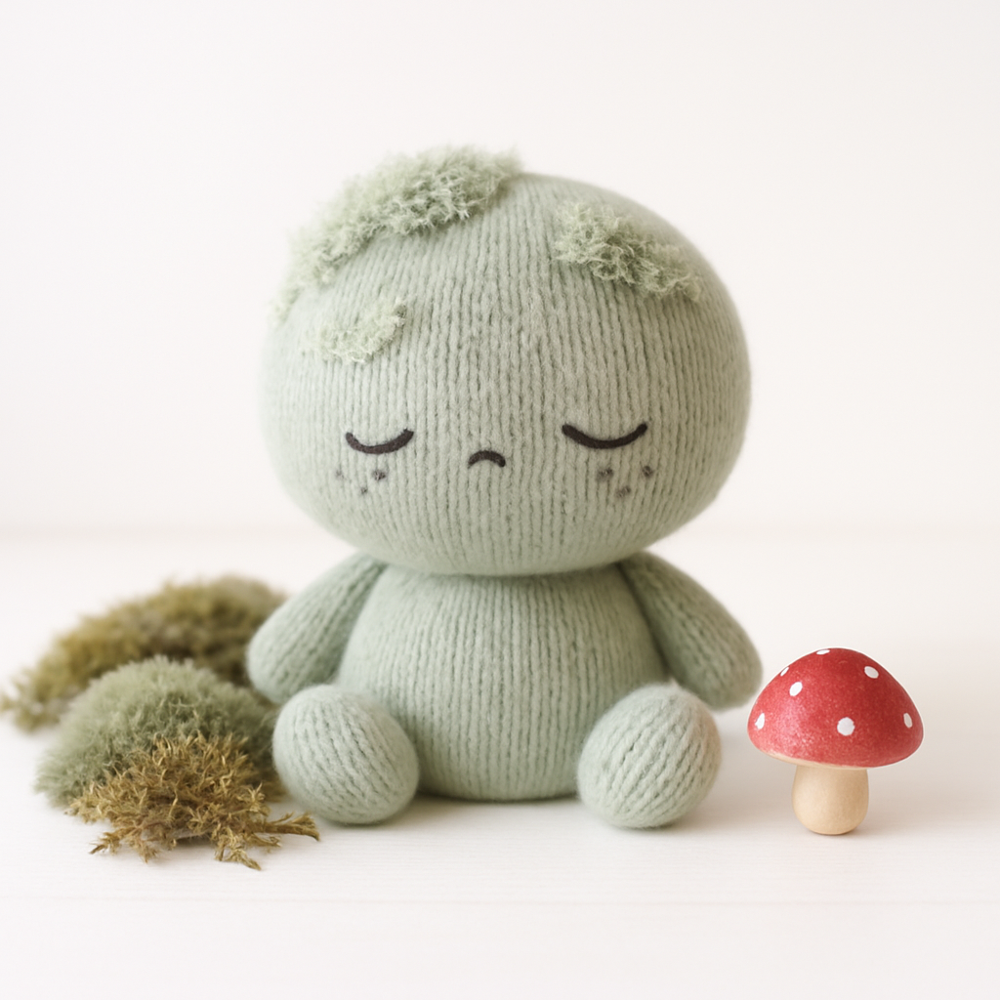
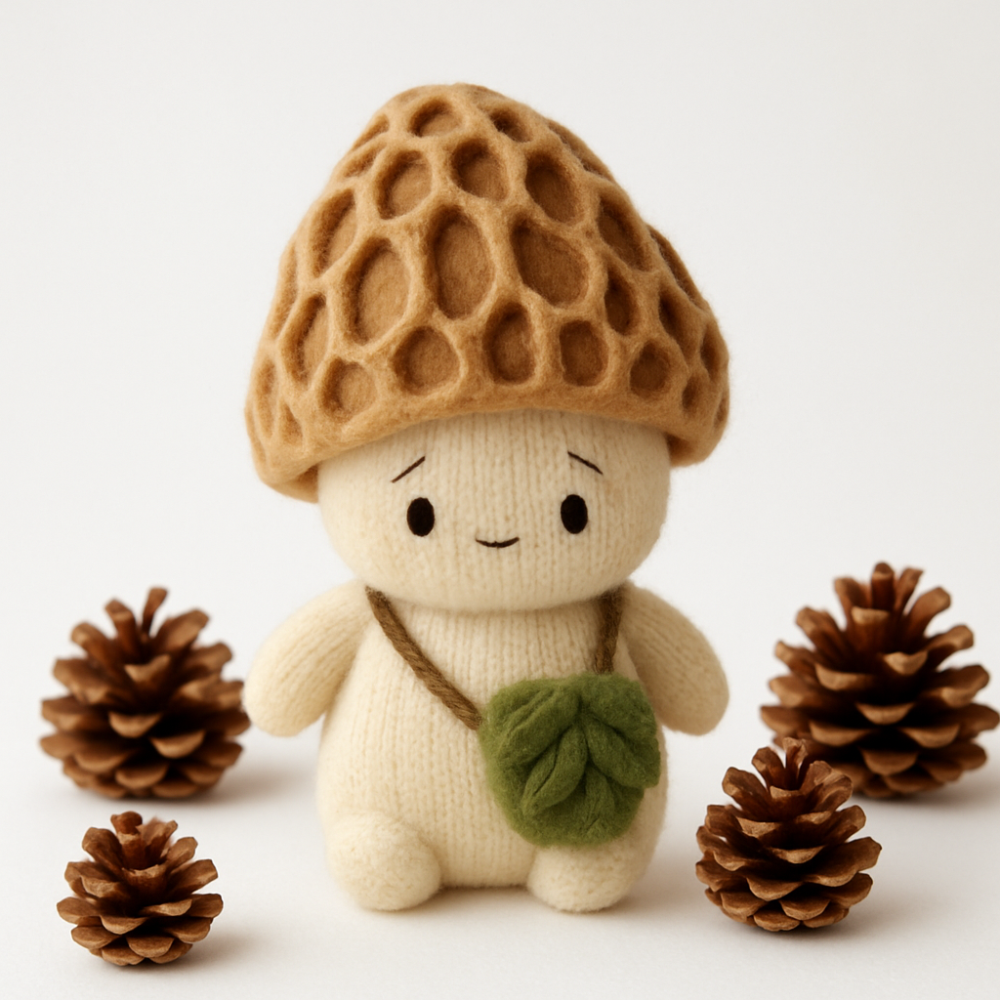
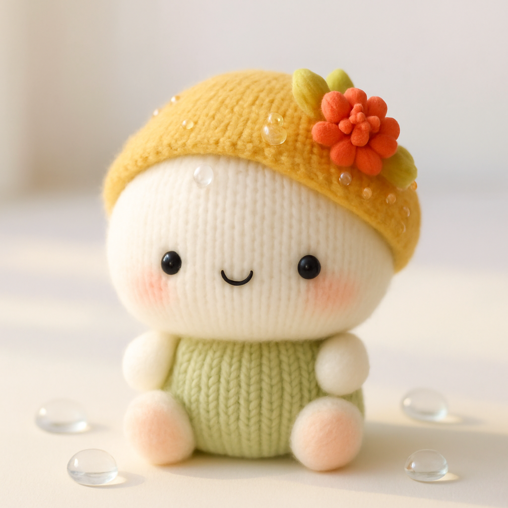

Welcome to Mossy Hollow
Mossy Hollow is a cozy stationery and collectibles shop inspired by tiny woodland creatures and the magic of the forest. From stickers and greeting cards to notebooks and keepsakes, each product is designed to bring a little warmth and whimsy to everyday life.
Meet the Hollows
The Hollows are tiny forest friends who call Mossy Hollow home. They come in three different species:
- Mosslings: soft moss-covered creatures
- Sporelings: curious mushroom folk
- Dewlings: gentle beings born from dew and flowers
Here are some of the residents you might meet on our products!
Bramble

Name: Bramble Woods
Species: Mossling
Birthday: First morning fog
Height: About one pinecone tall
Likes: Collecting tiny trinkets, naps in moss patches, warm tea steam
Dislikes: Being rushed, dry leaves, crowded spaces
Toffle

Name: Toffle Baker
Species: Sporeling
Birthday: Late autumn rain
Height: About two stacked apples tall
Likes: Moss, warm soup, shiny rocks
Dislikes: Loud noises, dry weather, fast walking
Dewdrop

Name: Dewdrop Bell
Species: Dewling
Birthday: First rain of spring
Height: About one teacup tall
Likes: Quiet rooms, flower petals, sleepy music
Dislikes: Loud footsteps, direct sunlight, being left alone for too long
Mallow

Name: Mallow Reed
Species: Mossling
Birthday: The last foggy morning of autumn
Height: About one moss cushion tall
Likes: Quiet places, rainy windows, sleeping under moss blankets
Dislikes: Strong winds, being startled awake, loud arguments
Morel

Name: Morel Gardner
Species: Sporeling
Birthday: First warm rain after winter
Height: About one mushroom cap tall
Likes: Forest paths, damp soil, collecting fallen seeds
Dislikes: Dry afternoons, bright lamps, muddy footprints
Posie

Name: Posie Flores
Species: Dewling
Birthday: First garden bloom
Height: About one flowerpot tall
Likes: Pressed flowers, soft ribbons, sunny windowsills
Dislikes: Wilted petals, tangled thread, chilly mornings
Looking for the menu?